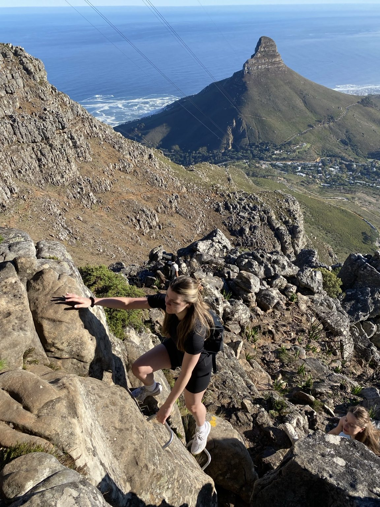
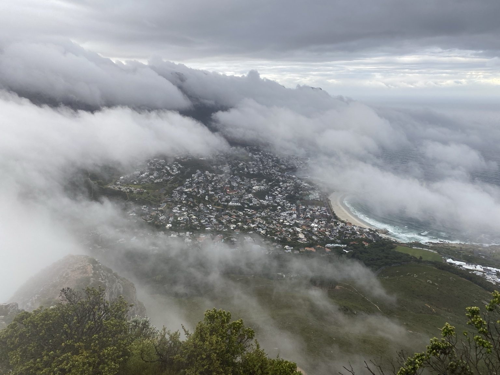
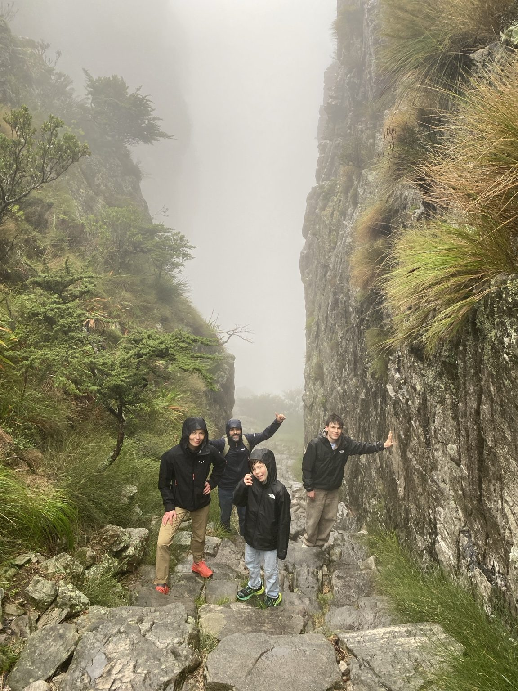
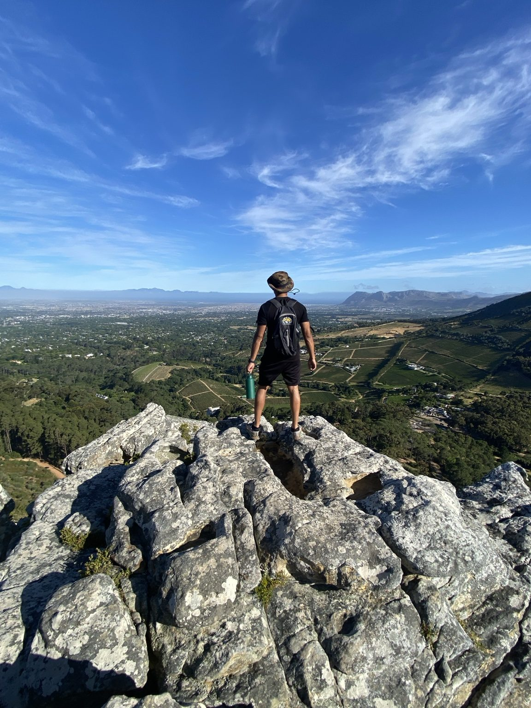

People often look at Table Mountain from Cape Town and underestimate how much climbing is involved. The easiest way I can describe some of the summit hikes is this: imagine getting onto a StairMaster and staying on it for around two hours — except the steps are rocks, the weather can change around you, and there's a mountain summit waiting at the end.
That isn't meant to scare you away. Hiking Table Mountain is one of Cape Town's great experiences. But the better prepared you are, the more energy you can spend enjoying it instead of wondering what you've signed up for.
I've put together the advice I most often give guests before we head up the mountain.
About 6:00am, depending on the route and conditions.
About 7:00am, with the day's forecast and route in mind.
The sustained elevation gain and steepness.
That the cableway will definitely be running when you reach the top.
How difficult is hiking Table Mountain?
The biggest thing visitors underestimate is not necessarily distance — it's elevation gain and steepness. On a summit route you can spend a long time continuously climbing. That's why the StairMaster comparison works so well.
Platteklip Gorge, for example, is the most direct route to the top and doesn't require the technical scrambling of India Venster, but that doesn't make it easy. The stone steps keep coming and the climb is sustained. If you want a detailed comparison, read our India Venster vs Platteklip Gorge guide.

How do I know if I'm fit enough?
Before a hike, I often ask guests to rate their fitness from 1 to 10, where 1 is “couch potato” and 10 is “fitness freak”. The number by itself isn't a scientific test — what matters is the conversation that follows.
I ask what hikes they've done before, what regular exercise they do, and how difficult those previous hikes felt. Someone may call themselves a 7, but their hiking history tells me much more about how they'll handle a steep mountain climb.
What should you wear and pack?
Three mistakes come up repeatedly: shoes without enough grip, no sun hat, and no warm layer because the city looks sunny when the hike begins.
Table Mountain can give you very different conditions from those at street level. I recommend proper footwear with reliable grip, sun protection, enough water, snacks, and a warm or wind-resistant layer. A light waterproof layer is worth carrying when conditions call for it.
For a normal morning summit hike, snacks are often enough. If we're doing a longer route of around six hours, I'll plan for a light lunch as well.
What is the best time to start a Table Mountain hike?
For the routes I guide, I generally prefer around 6:00am in summer and 7:00am in winter, adjusted for the specific route, daylight and forecast.
Starting early helps us avoid as much of the strong late-morning and midday summer heat as possible. It also works nicely with the rest of the day: on many routes we can complete the experience before lunch instead of reaching the hardest part when everyone is hot and hungry.
Table Mountain weather can change remarkably fast
The mountain's weather deserves respect. One of the most recognisable examples is the “tablecloth” cloud associated with Cape Town's south-easter. Conditions higher on the mountain can become cold, wet, windy and low-visibility even while other parts of the city look completely different.
Light rain doesn't automatically end every hike, but footwear, clothing, route choice and the full forecast become especially important. Strong wind gusts, heavy downpours, lightning or thunder can make the correct decision to change the plan or cancel.


Can I rely on the cable car to get down?
No. I tell guests to treat the cableway as a possible descent, not a guaranteed escape route.
The Table Mountain Aerial Cableway operates weather permitting and can close in bad weather. I check the latest operational status and the hourly forecast because wind can strengthen while we're hiking.
If the cableway stops operating, you may need to hike down. That possibility should be part of the day's fitness, timing and route planning from the beginning.

What surprises first-time visitors at the top?
The views usually get the first reaction, but guests are also surprised by how much there is to discover on the mountain: the diversity of plants, geology and the changing perspectives over Cape Town, the Atlantic and surrounding peaks.
And after climbing a mountain, discovering proper visitor facilities at the upper station — places to get food and drink, shops and toilets — can feel wonderfully civilised.

Why hike Table Mountain with a guide?
Safety is an important part of guiding, but it isn't the only reason.
A good local guide can add context to what you're seeing — plants, geology, history, landmarks and stories — while also managing route choice, pace and changing conditions. Table Mountain has a network of trails, and some junctions can lead toward much more advanced terrain. A wrong turn can put an inexperienced visitor somewhere they never intended to be.
For me, one of the biggest benefits is peace of mind. Instead of spending the whole hike checking navigation, weather and every junction, guests can focus more of their attention on actually experiencing the mountain.
Table Mountain or Lion's Head if you only have time for one?
If you want the bucket-list experience of hiking one of the New7Wonders of Nature, want a longer mountain adventure, or simply want the bragging rights of saying you climbed Table Mountain, I'd choose Table Mountain.
It also offers much more variety if you have the time for longer options — including routes where you hike both up and down, or a longer crossing such as Skeleton Gorge toward the cableway side.
Lion's Head is a fantastic shorter experience, particularly for sunrise or sunset. If that's the decision you're making, our Lion's Head sunrise vs sunset guide will help.
My final advice before hiking Table Mountain
Don't underestimate it, but don't let that stop you from doing it either.
Choose a route that suits you, start at a sensible time, wear proper shoes, carry layers and water, keep watching the weather, and never build your entire plan around the assumption that the cable car will take you down.
Do those things and the steep climb becomes part of the story. Reaching the top under your own power, looking back over Cape Town and realising what you've just climbed is a feeling that's difficult to beat.
For broader preparation before heading onto Cape Town's trails, also read our Safe Hiking in Cape Town guide.
Frequently asked questions
Is hiking Table Mountain hard?
Most summit hikes involve sustained uphill climbing. Difficulty varies by route, fitness, weather and experience. Even a less technical route such as Platteklip Gorge can be physically demanding.
What time should I start hiking Table Mountain?
There is no single start time for every route and season. For many of my guided hikes I aim for around 6:00am in summer and 7:00am in winter, then adjust for the route, daylight and forecast.
What shoes should I wear?
Wear proper walking or hiking footwear with reliable grip. Smooth-soled casual shoes make rocky terrain unnecessarily difficult, especially when surfaces are wet.
Can I hike up and take the cable car down?
Often yes, but never assume it will operate. The cableway is weather-dependent, so plan with enough time and ability for a hiking descent if necessary.
Do I need a guide to hike Table Mountain?
Not every experienced local hiker needs a guide. For visitors unfamiliar with the mountain, a qualified guide can help with route choice, navigation, pacing, changing conditions and local knowledge, particularly on more technical routes.